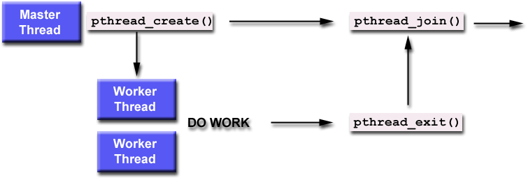

hyPACK-2013 Mode 1 : Mixed Mode of Programming Using MPI & Pthreads
|
The MPI Pthreads mixed Programming paradigm software on multi-core processors or cluster of Multi Processors
play an important role to understand and enhance the performance of your application.
Hybrid or mixed mode of programs using both MPI and
Pthreads execute faster than programs using only MPI on Multi-core processors.
In typical hybrid parallel program,
MPI process execute on each multi-processor or compute node which consists of multiple cores.
Inside each sections
of code, the MPI processes for threads to occupy the multi-core CPU'S, and these threads can interact via shared
variables.
Example programs using different APIs. Compilation and execution of Pthread programs, programs numerical
and non-numerical computations
are discussed using different MPI & Pthread APIs. Examples programs on numerical integration of "pi" value by using different algortihms
vector-vector multiplication using block striped partitioning,
matrix-vector multiplication using self scheduling algorithm, and block checkboard
partitioning, computation of Infinity norm of the square matrix using block striped partitioning.
|
|
List of MPI-Pthreads Programs
|
Example 1.1
|
Write an MPI-Pthread program to print Hello World"
|
Example 1.2
|
Write an MPI-Pthread program to compute the value of PI pie function by numerical integration of
a function f(x) = 4/(1+x2) between the limits 0 and 1.
|
Example 1.3
|
Write an MPI-Pthread program to calculate Infinity norm of a matrix using block striped partitioning with row wise data distribution.
|
Example 1.4
|
Write a MPI-Pthread program to compute the matrix-vector multiplication using self scheduling algorithm.
|
Example 1.5
|
Write a MPI-Pthread program to compute the matrix into matrix Multiplication using checker Board Partitioning (Assignment).
|
Example 1.6
|
Write a MPI-Pthread program to solve a system of linear equations AX=b using Parallel Jacobi Method. (Assignment).
|
|
Introduction to Pthreads
|
|
Shared memory architectures are gradually becoming more prominent in the HPC market, as advances in technology
have allowed larger numbers of CPU's to have access to a single memory space. In addition, manufacturers are
increasingly clustering these SMP systems together to go beyond the limits of a single system. As clustered SMPs
become more prominent, it becomes more important for applications to be portable and efficient on these
systems.
Message passing code written in MPI are obviously portable and should transfer easily to clustered SMP systems.
While message passing is required to communicate between boxes, it is not immediately clear that this is the
most efficient parallelisation technique within an SMP box. In theory a shared memory model such as Pthreads
should offer a more efficient parallelisation strategy within an SMP box. Hence a combination of shared memory
and message passing parallelisation paradigms within the same application (mixed mode programming) may provide a
more efficient parallelisation strategy than pure MPI.
While mixed code may involve other programming languages such as High Performance Fortran (HPF) and Open-MP,
both MPI and POSIX Threads are an industry standard. MPI provides distributed computing support and POSIX Threads
provides Shared Memory Programming support.
While SMP clusters offer the greatest reason for developing mixed mode code, both the Pthreads and MPI paradigms
have different advantages and disadvantages and by developing such a model these characteristics might even be
exploited to give the best performance on a single SMP system.
Message Passing Interface
A proposed standard Message Passing Interface(MPI) is originally designed for writing applications and libraries
for distributed memory environments. The main advantages of establishing a message-passing interface for such
environments are portability and ease of use, and a standard memory-passing interface is a key component
in building a concurrent computing environment in which applications, software libraries, and tools can be
transparently ported between different machines.
The Message Passing Interface (MPI) is the most widely used of the new standards. It is not a new programming
language; rather it is a library of subprograms that can be called from C and Fortran programs. An open,
international forum consisting of representatives from industry, academia, and government laboratories developed
it. It has rapidly received widespread acceptance because it has been carefully designed to permit maximum
performance on a wide variety of systems, and it is based on message passing, one of the most powerful and
widely used paradigms for programming parallel systems (MPI forum 1994,). MPI is a good example of using a
few independent (orthogonal) language features. MPI is based on four main concepts that are orthogonal to
one another: data type, communication operations, communicator, and virtual topology. Any combination of
the four is valid. This orthogonal independence brings a multiplicative effect.
The current version of MPI assumes that processes are statically allocated; i.e., the number of processes
is set at the beginning of program execution, and no additional processes are created during execution.
Each processes is assigned a unique integer rank in the range 0, 1, 2,...,p-1, where p is the number of
processes. This approach to programming MIMD systems is called single-program multiple data (SPMD).
In SPMD programs, the effect of running different programs is obtained by the use of conditional branches
within the source code.
A nice feature of the MPI design is that MPI provides a powerful functionality based on four orthogonal
concepts. These four concepts in MPI are message data types, communicators, communication operations,
and virtual topology.
Pthreads:
The Pthreads library is a POSIX C API thread library that has standardized functions for using threads
across different platforms. Historically, hardware vendors have implemented their own proprietary versions
of threads. These implementations differed substantially from each other making it difficult for programmers
to develop portable threaded applications. In order to take full advantage of the capabilities provided by
threads, a standardized programming interface was required. For UNIX systems, this interface has been specified
by the IEEE POSIX 1003.1c standard (1995). Implementations that adhere to this standard are referred to
as POSIX threads, or Pthreads. Most hardware vendors now offer Pthreads in addition to their proprietary
API's. Pthreads are defined as a set of C language programming types and procedure calls. Vendors usually
provide a Pthreads implementation in the form of a header/include file and a library that you link with
your program.
A Thread is a 'Light Weight Process'. A thread is a stream of instructions that can be scheduled as an independent unit.
A thread exists within a process, and uses the process resources. Since threads are very small compared with processes,
thread creation is relatively cheap in terms of CPU costs. As processes require their own resource bundle,
and threads share resources, threads are likewise memory frugal. There can be multiple threads within a process.
Multithreaded programs may have several threads running through different code
paths "simultaneously".
In shared memory multiprocessor architectures, such as SMPs, threads can be used to implement parallelism.
Historically, hardware vendors have implemented their own proprietary versions of threads, making portability a
concern for software developers. For UNIX systems, a standardized C language threads programming interface has
been specified by the IEEE POSIX 1003.1c standard. Implementations that adhere to this standard are referred to
as POSIX threads, or Pthreads.
The tutorial begins with an introduction to concepts, motivations, and design considerations for using Pthreads.
Each of the three major classes of routines in the Pthreads API are then covered: Thread Management, Mutex Variables,
and Condition Variables. Example codes are used throughout to demonstrate how to use most of the Pthreads routines
needed by a new Pthreads programmer.
|
|
An Overview of Pthreads
|
Historically, hardware vendors have implemented their own proprietary versions of threads. These implementations differed substantially from
each other making it difficult for programmers to develop portable threaded applications.
In order to take full advantage of the capabilities provided by threads, a standardized programming interface was required. For UNIX systems, this
interface has been specified by the IEEE POSIX 1003.1c standard (1995).
Implementations which adhere to this standard are referred to as POSIX threads, or Pthreads. Most hardware vendors now offer Pthreads in addition to
their proprietary API's.
Pthreads are defined as a set of C language programming types and procedure calls, implemented with a pthread.h header/include file and a
thread library - though this library may be part of another library, such as libc.
The character P in Pthreads stands for POSIX.It is a set of threadsing interfaces developed by IEEE Committe in charge of specifying a portable
operating system interface(POSIX). POSIX committe defined a basic set of functions and data structures that it hoped would have been used by
numerous vendors so that threaded code can be ported easily across operating systems. It specifies API to handle most of actions required by
threads.It is a library that has standerdized functions for using threads across different platforms.
In general though, in order for a program to take advantage of Pthreads, it must be able to be organized into discrete,
independent tasks which can execute concurrently. For example, if routine1 and routine2 can be interchanged, interleaved and/or overlapped in real time,
they are candidates for threading as shown in Figure 1.

Figure 1. concurrent execution of Pthreads
Programs having the following characteristics may be well suited for pthreads:
Work that can be executed, or data that can be operated on, by multiple tasks simultaneously
Block for potentially long I/O waits
Use many CPU cycles in some places but not others
Must respond to asynchronous events
Some work is more important than other work (priority interrupts)
Pthreads can also be used for serial applications, to emulate parallel execution. A perfect example is the typical web browser,
which for most people, runs on a single cpu desktop/laptop machine.
|
|
Shared Memory Model
|
|
The Shared memory model is quie suitable to Pthread Programming and the users should understand concepts of
synchronization, critical section and deadlock conditions.
Synchronization
is an enforcing mechanism used to impose constraints on the order of executon of threads.
The features of the Shared
memory model :
All threads have access to the same global, shared memory
Threads also have their own private data
Programmers are responsible for synchronizing access (protecting) globally shared data.

Figure 2. Typical Shared Memory Model Using Threads
|
|
Thread Safeness:
|
|
Thread-safeness: in a nutshell, refers an application's ability to execute multiple threads simultaneously
without "clobbering" shared data or creating "race" conditions.
For example, suppose that your application creates several threads, each of
which makes a call to the same library routine:
|
|
This library routine accesses/modifies a global structure or location in memory.
|
|
As each thread calls this routine it is possible that they may try to modify this global
structure/memory location at the same time.
|
|
If the routine does not employ some sort of synchronization constructs to prevent data corruption, then it
is not thread-safe.
|

Figure 3. Typical situtation for thread-safe
The implication to users of external library routines is that if you aren't 100% certain the routine is thread-safe, then you take your
chances with problems that could arise.
Recommendation: Be careful if your application uses libraries or other objects that don't explicitly guarantee thread-safeness.
When in doubt, assume that they are not thread-safe until proven otherwise. This can be done by "serializing" the calls to the uncertain
routine, etc.
|
|
Mixed Mode of Programming
|
|
Message passing codes written in MPI are portable and should transfer easily to cluster of
Multi-Core processor Systems.
Message passing is required to communicate between nodes (boxes) using different networks,and message passing
in node (SMPs or Multi-core processors) require communication within node. Performance depends upon the
efficient implementaton within a Multi-Core Processor box or a node of Message Passing Cluster.
OpenMP is an Application Program Interface (API) that may be used to explicitly direct multi-threaded, shared memory
parallelism. It is a specification for a set of compiler directives, library routines and environment variables
that can be used to specify shared memory parallelism in Fortran and C/C++ programs.
The OpenMP is a shared memory standard supported by most of the hardware and software vendors.
OpenMP is comprised of three primary API components such as Compiler Directives,
Runtime Library Routines, and Environment Variables
OpenMP is portable and the API is specified for C/C++ and Fortran.
Multiple platforms have been implemented including most Unix platforms and Windows NT. Efforts are going on
to implement on Multi-Core processors to enhance the performance. The available programming environment on most
of the Multi-Core processors will address the thread affinity to core and overheads in OpenMP programming environment.
A combination of shared memory and message
passing parallelisation paradigms within the same application (mixed mode programming) may provide a more efficient
parallelisation strategy than pure MPI.
While mixed code may involve other programming languages such as High Performance Fortran (HPF) and POSIX threads.
Mixed MPI and OpenMP codes are likely to represent the most widespread use of mixed mode programming on SMP
cluster due to their portability and the fact that they represent industry standards for distributed and shared
memory systems respectively.
While SMP clusters offer the greatest reason for developing mixed mode code, both the OpenMP and MPI paradigms
have different advantages and disadvantages and by developing such a model these characteristics might even be
exploited to give the best performance on a single SMP system.
By utilizing a mixed mode-programming model we should be able to take advantage of the benefits of both models. For example a mixed mode program may allow us to make use of the explicit control data placement policies of MPI with the finer grain parallelism of Pthreads. The majority of mixed mode applications involve a hierarchical model, MPI parallelisation occurring at the top level, and Pthreads parallelisation occurring below. For example, Figure 1 shows a 2D grid which has been divided between four MPI processes.
In the mixed mode programming concept, MPI should be thread safe. If not, the program may produce unexpected results. Special care is needed while using MPI library calls in mixed mode programmig with Pthreads to avoid race conditions or to get correct results.
As of this writing, mpich is not thread safe. However, you can use blocking MPI calls safely to a certain extent. For details visit: Thread Safety and more.
The sub-arrays assigned to each process have then been further divided between various threads. This model closely maps to the architecture of an SMP cluster, the MPI parallelisation occurring between the SMP boxes and the Pthreads parallelisation within the boxes. Message passing could be used within a code when this is relatively simple to implement and shared memory parallelism used where message passing is difficult. Most of the manufacturers provide extended versions of their communication library for clusters of multiprocessors, existing MPI codes can be directly used with a unified MPI model. The alternative is mixing MPI with a shared memory model such as Pthreads. In that case, different possibilities exist,
which must be compared according to the performance and programming effort tradeoff.
Thread Safety in MPI-Pthreads :
Although a large number of MPI implementations are thread-safe, mixed mode programming cannot be
guaranteed. To ensure the code is portable all MPI calls should be made within thread sequential
regions of the code.
In mixed mode-programming model, the advantage of the benefits of both models can be taken in which a mixed mode
program make use of the explicit control data placement policies of MPI with the finer grain parallelism of OpenMP.
The majority of mixed mode applications involve a hierarchical model, MPI parallelisation occurring at the top level,
and OpenMP parallelisation occurring below.
MPI Pthreads
The MPI-Pthreads mixed programming paradigm performs MPI-related tasks across nodes (boxes) of
Message Passing cluster of Multi-core processors and facilitate a variety of thread-related
tasks.
In typical hybrid parallel
program, MPI process execute on each multi-processor or compute node which consists of multiple cores.
Inside each sections of code, the MPI processes for threads to occupy the multi-core CPU'S, and these
threads can interact via shared variables.
Explicit threading of POSIX (Pthreads) model, provides a richer API in the form of
condition waits, locks of different types, and increased flexibility for building different
synchronization operations. Explicit threading is more widely used than in OpenMP, the rich
set of tools on Multi-Core processors may help programmer to understand performance issues.
Hybrid or mixed mode of programs using both MPI and
Pthreads execute faster than programs using only MPI on Multi-core processors for data intensive
specific class of applications.
|
Several advantages of Pthread programming on Multi-core processors are listed below.
1.
|
The primary motivation for using Pthreads is to realize potential program performance gains.
|
2.
|
When compared to the cost of creating and managing a process, a thread can be created
with much less operating system overhead. Managing threads requires fewer
system resources than managing processes.
|
3.
|
All threads within a process share the same address space. Inter-thread communication is
more efficient and in many cases, easier to use than inter-process communication.
|
4.
|
Threaded applications offer potential performance gains and practical advantages over
non-threaded applications in several other ways.
|
5.
|
Overlapping CPU work with I/O: For example, a program may have sections where it is
performing a long I/O operation. While one thread is waiting for an I/O system call to
complete, other threads can perform CPU intensive work.
|
6.
|
Priority/real-time scheduling: tasks that are more important can be scheduled to
supersede or interrupt lower priority tasks.
|
7.
|
synchronous event handling: tasks that service events of indeterminate frequency and
duration can be interleaved. For example, a web server can both transfer data from
previous requests and manage the arrival of new requests.
|
8.
|
Multi-threaded applications will work on a uni-processor system; yet naturally take
advantage of a multiprocessor system, without recompiling.
|
9.
|
In a multiprocessor environment, the most important reason for using Pthreads is to take
advantage of potential parallelism. In order for a program to take advantage of Pthreads,
it must be able to be organized into
discrete, independent tasks that can execute concurrently.
|
|
Basic Pthread Library Calls
|
|
1. pthread_create:
int pthread_create(pthread_t *thread, const pthread_attr_t *attr, void*(*start_routine) (void),(void *arg) ;
Creates a new thread, initializes its attributes, and makes it runnable.
The pthread_create subroutine creates a new thread and initializes its attributes using the thread attributes object
specified by the attr parameter. The new thread inherits its creating thread's signal mask; but any pending signal
of the creating thread will be cleared for the new thread.
The new thread is made runnable, and will start executing the start_routine routine, with the parameter
specified by the arg parameter. The arg parameter is a void pointer; it can reference any kind of data.
It is not recommended to cast this pointer into a scalar data type (int for example), because the casts
may not be portable.
The pthread_create subroutine returns the new thread identifier via the thread argument.
The caller can use this thread identifier to perform various operations on the thread.
This identifier should be checked to ensure that the thread was successfully created.
The maximum number of threads that may be created by a process is implementation dependent.

Figure 4. Typical flow of number of Threads execution
Once created, threads are peers, and may create other threads. There is no implied hierarchy or dependency
between threads.
2. pthread_exit:
void pthread_exit(void *value_ptr)
Terminates the calling thread.
The pthread_exit subroutine terminates the calling thread safely, and stores a termination status for any thread that may join the calling thread.
The termination status is always a void pointer; it can reference any kind of data. It is not recommended to cast this pointer into a
scalar data type (int for example), because the casts may not be portable.
This subroutine never returns.
Unlike the exit subroutine, the pthread_exit subroutine does not close files. Thus any
file opened and used only by the calling thread must be closed before calling this
subroutine.It is also important to note that the pthread_exit subroutine frees any
thread- specific data, including the thread's stack. Any data allocated on the stack
becomes invalidentifier, since the stack is freed and the corresponding memory may be
reused by another thread. Therefore, thread synchronization objects (mutexes and condition
variables) allocated on a thread's stack must be destroyed before the thread calls the
pthread_exit subroutine.
Returning from the initial routine of a thread implicitly calls the pthread_exit
subroutine, using the return value as parameter.
3. pthread_self:
pthread_t pthread_self()
Returns the calling thread's identifier.
The pthread_self subroutine returns the calling thread's identifier.
4. pthread_join:
int pthread_join(pthread_t thread, void **value_ptr);
The pthread_join subroutine blocks the calling thread until the thread specified in the call terminates. The target thread's termination status is returned in the status parameter.
If the target thread is already terminated, but not yet detached, the subroutine returns immediately. It is impossible to join a detached thread, even if it is not yet terminated. The target thread is automatically detached after all joined threads have been woken up.
This subroutine does not itself cause a thread to be terminated. It acts like the pthread_cond_wait subroutine to wait for a special condition.
"Joining" is one way to accomplish synchronization between threads. For example:

Figure 6. Typical master and worker - Pthread Programming model
5. pthread_detach:
int pthread_detach(pthread_t thread, void **value_ptr);
Detaches the specified thread from the calling thread.
The pthread_detach subroutine is used to indicate to the implementation that storage for the thread whose thread identifier is in the location thread can be reclaimed When that thread terminates. This storage shall be reclaimed on process exit, regardless of whether the thread has been detached or not, and may include storage for thread return value. If thread has not yet terminated, pthread_detach shall not cause it to terminate. Multiple pthread_detach calls on the same target thread causes an error.
If the target thread is already terminated, but not yet detached, the subroutine returns immediately. It is impossible to join a detached thread, even if it is not yet terminated. The target thread is automatically detached after all joined threads have been woken up.
This subroutine does not itself cause a thread to be terminated. It acts like the pthread_cond_wait subroutine to wait
for a special condition.
6. pthread_mutex_init:
int pthread_mutex_init (pthread_mutex_t *mutex, pthread_mutexattr_t *attr);
Initializes a mutex and sets its attributes.
The pthread_mutex_init subroutine initializes a new mutex , and sets its attributes according to the mutex attributes
object attr. The mutex is initially unlocked.
After initialization of the mutex, the mutex attributes object can be reused for another mutex initialization,
or deleted.
7. pthread_mutex_destroy:
int pthread_mutex_destroy(pthread_mutex_t *mutex);
Deletes a mutex.
The pthread_mutex_destroy subroutine deletes the mutex mutex. After deletion of the mutex, the mutex parameter
is not valid identifier until it is initialized again by a call to the pthread_mutex_init subroutine.
8. pthread_mutex_lock:
int pthread_mutex_lock (pthread_mutex_t *mutex);
Locks a mutex.
The mutex object referenced by mutex is locked by calling pthread_mutex_lock. If the mutex is already locked,
the calling thread blocks until the mutex becomes available. This operation returns with the mutex object
referenced by mutex in the locked state with the calling thread as its owner.
9. pthread_mutex_trylock:
int pthread_mutex_trylock (pthread_mutex_t *mutex);
Tries to lock a Mutex.
The function pthread_mutex_trylock is identical to pthread_mutex_lock except that if the mutex object
referenced by mutex is currently locked (by any thread, including the current thread), the call returns
immediately.
10. pthread_mutex_unlock:
int pthread_mutex_unlock (pthread_mutex_t *mutex);
Unlocks a Mutex.
The pthread_mutex_unlock function releases the mutex object referenced by mutex. The manner in which a mutex is released
is dependent upon the mutex's type attribute. If there are threads blocked on the mutex object referenced by mutex
when pthread_mutex_unlock is called, resulting in the mutex becoming available, the scheduling policy is used to determine which thread shall acquire the mutex.
|
|
Compilation and Execution of MPI-Pthread Programs
|
|
Use #include < pthread.h> in the program for Pthreads Support.
Use #include<mpi.h> in the program for MPI Support.
(A) Using command line arguments:
The compilation and execution details of MPI-Pthreads programs will vary from a system to another.
The essential steps are common to all the systems.
# mpiicc <program name> -o <executable name> -lpthread
For example to compile a simple Hello World program user can type
# mpiicc MPI-Pthreads_HelloWorld.c -o MPI-Pthreads_HelloWorld -lpthread
(B) Using a Makefile:
For more control over the process of compiling and linking programs for MPI-Pthreads, you should use a 'Makefile'. You may also use some commands in Makefile particularly for programs contained in a large number of files. The user has to specify the names of the program and appropriate paths to link some of the libraries required for Pthreads programs in the Makefile
To compile and link a Pthreads program, you can use the command,
make
For the Hands-On Session programs the application users can use
Makefile for C programs.
(C) Executing a Program:
To execute a Pthreads Program, use
mpirun -n <number of processes > <Executable >
For example, to execute a simple HelloWorld Program, user must type:
#mpirun -n 3 ./HelloWorld
The output must look similar to the following:
Hello World! from Thread:1 on Process: 0.
Hello World! from Thread:2 on Process: 0.
Hello World! from Thread:1 on Process: 1.
Hello World! from Thread:2 on Process: 1.
(D) Executing MPI-Pthread program on Cetus cluster
To Execute the above Programs on IUCAA Cluster (Cetus Cluster) , the user should submit job through scheduler. To submit the job use the following command.
bsub -q <queue-name> -n[numberof processor] [options] mpirun -srun ./<executablename>
For Example :
bsub -q normal -n4 -ext"SULRM[nodes=4]" -o mpi-pthread-hello-world.out -e mpi-pthread-hello-world.err mpirun -srun./mpi-pthread-helloworld
NOTE : 1) Where "mpi-pthread-helloworld" is binary executable of mpi-pthread-helloworld.c program.
2) "nodes=1" indicates number of nodes required to run the executable.
3) Refer man pages of "bsub" for options.
|
|
Example Program : MPI-Pthread
|
|
The simple MPI-Pthreads program is "HelloWorld" program, in which the threads on each node print the message "Hello World!". The number of threads is hard coded into the program - 2. The main thread just creates the child threads.
The simple Pthreads program in C language in which the threads print "Hello World! from Thread: on Process:" message is explained below. We describe the features of the entire code and describe the program in details. We include the appropriate header file for threads support. The function Work is the routine that will be executed by the child threads. This routine prints the Message.
The following segment of the code explains these features. The description of program is as follows:
int MyRank, NumProcs;
Declarations to hold the rank of the processes and the number of processes.
void * Work(int MyID){
printf(" Hello World! from Thread:%d on Process: %d. \n", MyID, MyRank);
return;
}
Function Work is the function executed by each child thread. The function prints the message based on the thread that is executing currently.
Following the routine is the main function, the starting point for the program. We start by declaring the variables for child threads. pthread_t is the type of the variable to be declared. We declare two child threads.
pthread_t thread1, thread2;
/* initialize MPI Environment. */
MPI_Init(&argc, &argv);
MPI_Comm_rank(MPI_COMM_WORLD, &MyRank);
MPI_Comm_size(MPI_COMM_WORLD, &NumProcs);
After declaring the variables, we need to initialize the MPI Environment. We do that by calling the MPI_Init routine from MPI Library. We determine the total number of processes in the default MPI_COMM_WORLD Communicator using the MPI_Comm_size routine form MPI Library. We determine the rank of the current process by calling the routine MPI_Comm_rank. We use pthread_create routine provided by the Pthreads library to initialize the threads on each process.
pthread_create(&thread1, NULL, (void *(*) (void *)) Work, (void *) 1);
pthread_create(&thread2, NULL, (void *(*) (void *)) Work, (void *) 2);
pthread_create will initialize the thread, the thread attributes, the address of the routine the thread has to start executing and the parameters for that routine.
As soon as a thread is created, it will start executing the routine that has been assigned to it by pthread_create.
From the code it can be seen clearly that both the worker threads are executing the same routine. Each thread has its own copy of the stack variables for the routine. thread1 will execute the routine with "1" as the parameter and thread2 with "2" as the parameter. Depending on the implementation of the standard on your platform, the output will differ.
After creating the workers and assigning work to them, we have to inform the main thread to wait for them to finish. If this is not done, the main thread does its work and then terminates without checking if the worker threads have finished or not, terminating any worker thread that may be active at that time. We use the routine pthread_wait for this purpose. This is a blocking call. The call will return only after the thread specified has terminated.
/* Join the threads to inform the main thread to wait till they are done.
*/
pthread_join(thread1, NULL);
pthread_join(thread2, NULL);
Here we inform the main thread to wait for the termination of thread1 and thread2. After both the calls have returned, the main thread will continue and calls MPI_Finalize to signal its readiness to terminate the whole MPI Application.
MPI_Finalize();
return;
|
|
What is Thread?
A thread is a stream of instructions that can be scheduled as an independent unit. A thread exists within a process, and uses the process resources. Since threads are very small compared with processes, thread creation is relatively cheap in terms of CPU costs.
A Thread is an encapsulation of the flow of control in a program. Most people are used to writing single-threaded programs - that is,
programs that only execute one path through their code "at a time". Multithreaded programs may have several threads running through
different code paths "simultaneously".
Why are threads interesting?
A context switch between two threads in a single process is considerably cheaper than a context switch between two processes. In addition, the fact that all data except for stack and registers are shared between threads makes them a natural vehicle for expressing tasks that can be broken down into subtasks that can be run cooperatively.
What are Pthreads?
Pthreads stands from POSIX Threads. POSIX threads, based on the IEEE POSIX 1003.1c-1995 (also known as the ISO/IEC 9945-1:1996) standard, part of the ANSI/IEEE 1003.1, 1996 edition, standard.
The Pthreads library is a POSIX C API thread library that has standardized functions for using threads across different platforms.
It is a set of threading interfaces developed by IEEE Committe in charge of specifying a portable operating system interface(POSIX).POSIX committe defined a basic set of functions and data structures that it hoped would have been used by numerous vendors so that threaded code can be ported easily across operating systems.It specifies API to handle most of actions required by threads.It is a library that has standerdized functions for using threads across different platforms.
What is Lightweight process?
A lightweight process (also known in some implementations, confusingly, as a kernel thread) is a schedulable entity that the kernel is aware of. On most systems, it consists of some execution context and some accounting information (i.e. much less than a full-blown process).
Several operating systems allow lightweight processes to be "bound" to particular CPUs; this guarantees that those threads will only execute on the specified CPUs.
What does MT safety mean?
If some piece of code is described as MT-safe, this indicates that it can be used safely within a multithreaded program, and that it supports a "reasonable" level of concurrency. This isn't very interesting; what you, as a programmer using threads, need to worry about is code that is not MT-safe. MT-unsafe code may use global and/or static data. If you need to call MT-unsafe code from within a multithreaded program, you may need to go to some effort to ensure that only one thread calls that code at any time.
Wrapping a global lock around MT-unsafe code will generally let you call it from within a multithreaded program, but since this does not permit concurrent access to that code, it is not considered to make it MT-safe.
What is thread Scheduling?
Scheduling involves deciding what thread should execute next on a particular CPU. It is usually also taken as involving the context switch to that thread.
What are the different kinds of threads?
There are two main kinds of threads implementations:
User-space threads
Kernel-supported threads.
There are several sets of differences between these different threads implementations.
Architectural differences:
User-space threads live without any support from the kernel; they maintain all of their state in user space. Since the kernel does not know about them,
they cannot be scheduled to run on multiple processors in parallel.
Kernel-supported threads fall into two classes. In a "pure" kernel-supported system, the kernel is responsible for scheduling all threads. Systems in which the kernel cooperates with a user-level library to do scheduling are known as two-level, or hybrid, systems. Typically, the kernel schedules LWPs, and the user-level library schedules threads onto LWPs. Because of its performance problems (caused by the need to cross the user/kernel protection boundary twice for every thread context switch), the former class has fewer members than does the latter (at least on Unix variants). Both classes allow threads to be run across multiple processors in parallel.
Performance differences:
In terms of context switch time, user-space threads are the fastest, with two-level threads coming next (all other things being equal). However, if you have a multiprocessor, user-level threads can only be run on a single CPU, while both two-level and pure kernel-supported threads can be run on multiple CPUs simultaneously.
Potential problems with functionality:
Because the kernel does not know about user threads, there is a danger that ordinary blocking system
calls will block the entire process (this is bad) rather than just the calling thread. This means that user-space threads
libraries need to jump through hoops in order to provide "blocking" system calls that don't block the entire process.
This problem also exists with two-level kernel-supported threads, though it is not as acute as for user-level threads.
What usually happens here is that system calls block entire LWPs.
This means that if more threads exist than do LWPs and all of the LWPs are blocked in system calls, then other
threads that could potentially make forward progress are prevented from doing so.
The Solaris threads library provides a reasonable solution to this problem. If the kernel notices
that all LWPs in a process are blocked, it sends a signal to the process. This signal is caught by the user-level
threads library, which can create another LWP so that the process will continue to make progress.
|
|
| |